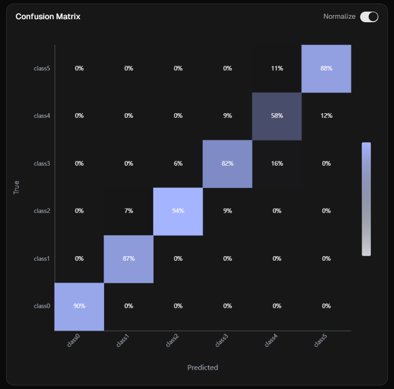
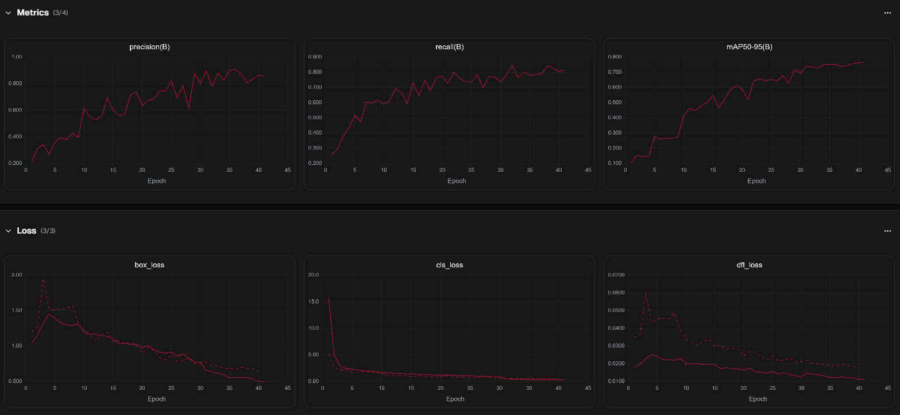

Sommaire
- Objectif & contraintes du sujet
- Architecture globale du projet
- Pipeline de Training (Partie A)
- Dataset & annotation
- Data augmentation & entraînement
- Résultats & métriques
- Application de Serving (Partie B)
- Qualité, CI & démo live
Objectif
Reconnaître automatiquement, en temps réel, le nombre de doigts levés d'une ou plusieurs mains à partir d'un flux webcam.
6 classes fixées par le sujet, une bounding box par main :
0_doigt 1_doigt 2_doigts 3_doigts 4_doigts 5_doigts
Si deux mains sont visibles, le dashboard affiche la somme des doigts de toutes les mains détectées.
Contraintes respectées
Stack imposée
- Python 3.12
- Modèle YOLO26 (Ultralytics)
- Dataset & annotation : Ultralytics Platform / HUB
- Code versionné sur GitHub
Livrables
- Pipeline ML (extraction → évaluation)
- App de serving dockerisée
- Dashboard webcam temps réel
- ≥ 10 FPS en live exigé
Bonnes pratiques de dev appliquées de bout en bout : séparation des responsabilités, qualité de code, CI.
Architecture globale
A — Pipeline de Training
Package Python sharp : extraction, validation, préparation, training, évaluation. Pipeline locale + variante cloud (Ultralytics HUB).
B — Application de Serving
Backend FastAPI qui charge best.pt au démarrage, frontend Vue 3 servi par nginx, le tout en Docker Compose.
Partie A — Pipeline ML
5 étapes, responsabilités séparées (un module par brique) :
Configurable via settings.toml (dynaconf), variables SHARP_* ou arguments CLI. Une commande :
python run.py local all --dataset-id <ID> # extraction → … → évaluationDataset & annotation

Outil : Ultralytics Platform / HUB — annotation et gestion du dataset, extraction via hub-sdk.
Validation & préparation
Validation
- Images réellement décodées (détecte les fichiers tronqués)
- Labels vérifiés : classe valide, pas de coordonnées négatives, valeurs dans [0,1]
- Box entièrement dans l'image, aire non nulle
Préparation des splits
- Réutilise un split existant si présent dans l'export
- Sinon split déterministe 60 / 20 / 20, seed 42
- data.yaml généré dynamiquement pour Ultralytics
Stratégie de data augmentation
Pensée pour la détection de mains : couleur pour peau & lumière, géométrie légère pour l'inclinaison.
Couleur (HSV)
- hsv_h = 0.015 · teinte
- hsv_s = 0.7 · saturation
- hsv_v = 0.4 · luminosité
→ robustesse aux teintes de peau et aux éclairages variés.
Géométrie
- degrees = 10 · rotation légère
- translate = 0.1 · scale = 0.5
- fliplr = 0.5 · miroir horizontal
- flipud = 0.0 · désactivé
- mosaic = 1.0 · mixup = 0.0
Choix clé : flipud désactivé — une main à l'envers n'est pas réaliste ; le miroir horizontal est sûr car il ne change pas le nombre de doigts.
Entraînement
Configuration
- Architecture : YOLO26
- Taille modèle : medium (yolo26m)
- imgsz = 640
- epochs = 100 · patience = 20 (early stopping)
- batch = -1 (auto)
Pourquoi ce choix
- Cible ≥ 10 FPS en live → modèle léger privilégié
- Auto-détection du device (CUDA > MPS > CPU)
- Métriques & courbes conservées sous runs/
Hyper-paramètres et augmentations centralisés dans settings.toml — entraînement reproductible.
Résultats & métriques
Évaluation sur le jeu de test via model.val(split="test").
Matrice de confusion & courbes d'entraînement détaillées → slide suivante.
Résultats — matrice & courbes
Matrice de confusion (normalisée)

Courbes d'entraînement

Métriques (P, R, mAP) ↗ et pertes (box, cls, dfl) ↘ sur 40 epochs.
Diagonale franche : classes 0/1/2 très bien séparées ; principale confusion sur 4 vs 5 doigts.
Partie B — Serving dockerisé
Backend (FastAPI)
- Modèle chargé au démarrage
- GET /health — liveness + état modèle
- POST /predict — frame → détections JSON
Frontend (Vue 3 + Vite)
- SPA buildée, servie par nginx
- Overlay des bounding boxes + classes
- Compteur = somme des doigts
docker compose up --build # → dashboard sur http://localhost:8080Le dashboard
Ce qu'on voit
- Flux webcam temps réel
- Boîtes englobantes + classe par main
- Compteur géant = total des doigts à l'écran
- FPS live affiché
Compteur
🖐️ (5) + 🖐️ (5)
Boucle de capture auto-régulée pour rester fluide et tenir la cible de FPS. [INSÉRER UNE CAPTURE D'ÉCRAN DU DASHBOARD]
Sécurité & choix techniques
Pas de clé côté navigateur
Le dashboard local appelle /predict via le proxy nginx : la clé API ne transite jamais par le bundle public.
Configuration par variables d'env
SHARP_MODEL_PATH, SHARP_API_KEY, SHARP_CONF, SHARP_IOU, SHARP_IMGSZ — aucun secret committé.
⚠️ Avec Vite, toute valeur VITE_* est inlinée dans le bundle public → la démo statique GitHub Pages n'utilise qu'une clé dédiée et régénérable.
Qualité du code & CI
Qualité (critères d'éval)
- Type hints + docstrings (style Google)
- ruff (lint) + black (format)
- .pre-commit-config.yaml
- Code réparti en modules à responsabilité unique
- Tests pytest (classes, validation, préparation)
CI — bonus (+1 pt)
- GitHub Actions sur chaque Pull Request
- lint + format + tests unitaires
- Backend de serving également linté
Commits Conventional Commits, branches typées.
Usage des LLM
Le sujet encourage l'usage des LLM pour la partie web — en documentant les choix et les apprentissages.
Comment on s'en est servi
- Bootstrap du frontend Vue + config nginx/Docker
- Revue de sécurité (exposition de la clé Vite)
Ce qu'on en retient
- Garder une codebase saine & minimale — ne pas sur-architecturer
- Toujours challenger les réponses face au sujet
Démo live
Scénarios : 1 main · 2 mains · différentes combinaisons de doigts
Objectif : montrer la robustesse et le compteur en temps réel (≥ 10 FPS).
Itérations & difficultés
Notre démarche
- Premiers entraînements « à l'aveugle », sans augmentation
- Plusieurs stratégies d'augmentation testées en parallèle
- Ajout d'images négatives (visages, scènes sans main)
Difficultés rencontrées
- Confusion récurrente, surtout 4 vs 5 doigts
- Manque de données → datasets externes à réannoter
- Overfitting sur certaines versions (mémorisation)
Compromis clé : taille du modèle
Modèle lourd → meilleure accuracy (~80 %) mais temps réel dégradé sur le dashboard. Modèle léger → entraînement rapide & requêtes API plus fluides, mais accuracy plafonnée à 65–70 %. La data augmentation a été notre principal levier pour pousser le modèle léger.
Bilan
Réussites
- Pipeline ML reproductible de bout en bout
- Serving dockerisé propre + dashboard temps réel
- CI verte, code typé & testé
Difficultés & pistes
- Confusion 4/5 doigts & équilibrage des classes
- Volume de données limité, réannotation des datasets externes
- Pistes : plus de données, modèle plus grand si le FPS le permet